Folha 5
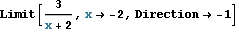
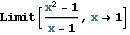
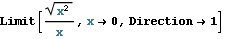
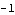
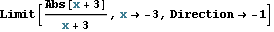
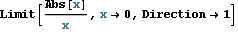
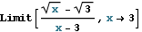
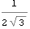
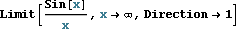
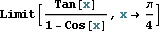
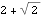
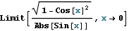
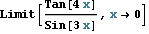
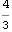
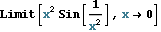
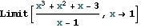
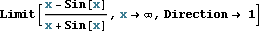
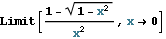
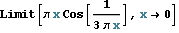
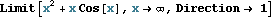
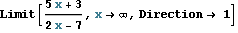
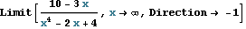
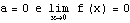
Sim
Quaisquer dois números inteiros servem como resposta.

Ø
{0}
Descontínua (em 0).
Descontínua (em 0).
Descontínua (é contínua apenas em 0).
Descontínua (é contínua apenas em -1 e 1).
a = 0
z = -2
z = -1
z ∈ {-3,0,2}
Existe
Não existe
Não existe
| a | F |
| b | V |
| c | V |
| d | V |
| e | F |
| f | F |
| g | F |
| a | possível |
| b | possível |
| c | impossível |
| d | impossível |
| e | possível |
| f | possível |
| g | possível |
| h | possível |
| i | impossível |
| j | impossível |
| k | possível |
| l | possível |
| m | possível |
| n | possível |
| o | possível |